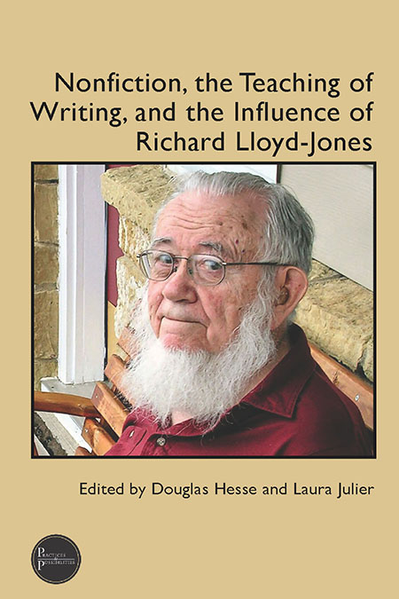

“Creative” writing and “academic” writing have historically existed in two separate spheres in the realm of academia. Creative writing as we have known it since the 20th century, focuses on forms such as the short story, fiction, and poetry. Additionally, it is often overlooked in the utility. Nonfiction, the Teaching of Writing, and the Influence of Richard Lloyd-Jones not only challenges the utility of teaching academic writing but highlights the academic and pedagogical potential of creative nonfiction by invoking the work of Richard “Jix” Lloyd-Jones, the former chair of the English Department at the University of Iowa. With his emphasis on forms such as the lyric essay, memoir, journal, and experimental writing, this work explains how Richard Lloyd-Jones contributed to the establishment of the first American graduate degree program in nonfiction writing, and then uses testimonials from eleven instructors in various academic settings who utilize his pedagogical methodologies, as well as the results of utilizing those methods.
The book is divided into two parts; Part One begins with the legacy of Richard “Jix” Lloyd-Jones and gives a detailed overview of who he was, and how his work paved the way for creative writing instruction, while Part Two is a compilation of essays written by other instructors that aims to validate Lloyd-Jones’s work by demonstrating what his approaches achieve when they are put into practice. To better introduce the reader to Lloyd-Jones, Part One begins by addressing the exigency of creative nonfiction’s place in the modern classroom and how it has historically been viewed by scholars from the twentieth century and onward.
Richard “Jix” Lloyd-Jones, the figure at the center of the text, is introduced after a brief overview of the rise of the MFA Program at the University of Iowa. Between 1970 and 2000, there is a visible divide between “creative” writing and “other” writing: nonfiction, expository, rhetorical. During this time, it is explained that the University of Iowa’s English Department began to re-vamp its curriculum, offering over thirty writing courses by 1974 that encompassed fiction, poetry, playwriting, and many others. As the chair of the University of Iowa’s Department of English and Director of their School of Letters, Lloyd-Jones is significant because of his role in bridging the gap between “required” writing (technical, academic writing) and “creative” writing (in the sense of nonfiction, such as the essay). We learn that Richard Lloyd-Jones was an experienced instructor of the former, as made evident by his experience teaching technical writing to engineering students (Hesse and Julier, 2023). But in a process-focused pedagogy, it is creative nonfiction that is encompassed in his teaching methods.
Part two of the text turns the focus away from Richard Lloyd-Jones himself and instead opts to highlight how other instructors have used his methods, and the results that they had achieved by doing so. This structure shift is rhetorically effective because it justifies the proposed benefits of creative nonfiction instruction through results of its implementation in different scenarios, rather than working on the assumption that it is objectively correct. While there are several notable contributors to this section of the text, I will highlight the contributors whose works were selected for the purpose of this review:
Professor of English at the University of Denver and founding Executive Director of Writing. As a co-author of the book Creating Nonfiction, Hesse has been the recipient of numerous writing awards, such as the Donald Murray prize and a “notable essay” mention in The Best American Essays.
As the director of the Professional Writing Program at Michigan State University, Laura Julier has taught courses in editing, publishing, and nonfiction. Additionally, she edited Fourth Genre: Explorations in Nonfiction, published by Michigan State University Press.
The Kellog W. Hunt Professor of English Emerita at Florida State University, Yancey has held several leadership positions in organizations such as the Conference on College Composition and Communication (CCCC), National Council of Teachers of English (NCTE), and the Council of Writing Program Administrators. Her research interests include writing curriculum, pedagogy, and assessment.
A teacher in the M.F.A. and undergraduate creative writing programs at the University of Central Florida, and recipient of the Annie Dillard essay award, Bartkevicius has published creative works in several academic and creative writing journals, such as The Hudson Review and Fourth Genre.
An English instructor who has served as the director of several first-year writing programs at various universities, including the University of Michigan. Nancy DeJoy’s approach to instruction is one that focuses on “participation and contribution,” rather than “adaptation and consumption” (Hesse and Julier, 2023, pp. 235). She is also an accomplished poet, and earned over 30,000 views for her TEDx talk, “Illuminating Survivor Voices.”
An essayist and Assistant Professor Emerita of English at Luther College, Faldet has developed several anthologies, such as Our Stories of Miscarriage: Healing With Words.